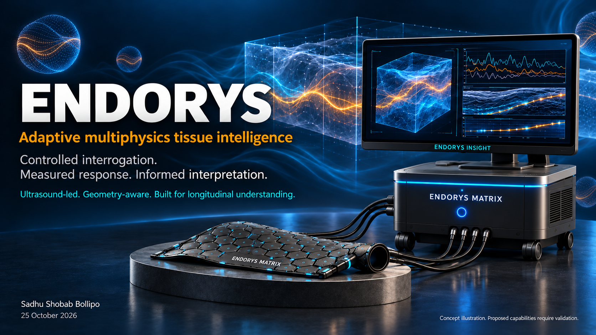
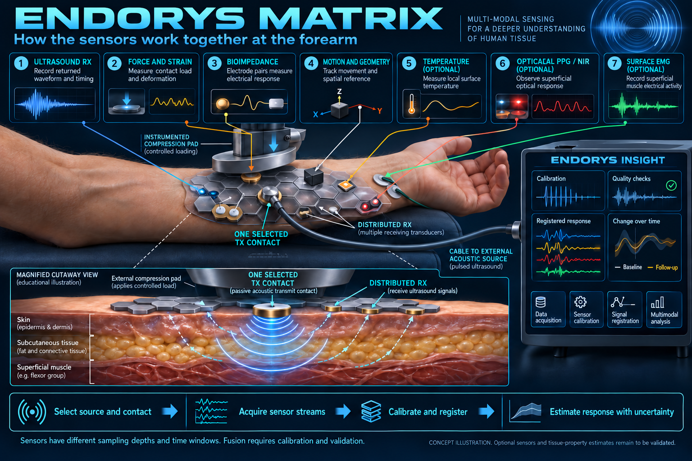

Architecture & protocols
Research specifications, literature mapping, experimental planning and contribution guidance.
Explore the repository ↗Exploring how controlled ultrasound, conformal sensing and calibrated analysis could reveal more about tissue response.
Research concept & synthetic software examples.
Physical and clinical validation remain ahead.
Endorys investigates a simple question: can a controlled stimulus, measured across a well-characterised sensing interface, produce a useful and repeatable description of tissue response?
The wider concept brings together acoustic interrogation, mechanical response, optional complementary sensors and longitudinal analysis. Each addition introduces questions about calibration, geometry, uncertainty and interpretation.
Our first task is narrower: establish a reproducible, non-biological acoustic baseline before attempting the proposed matrix architecture or any clinical application.
Read the architecture ↗
Explore the workstreams behind the platform. These describe research scope, not validated products or clinical indications.
Showing all 12 research branches.
A reproducible acoustic phantom experiment.
Experiment 001 starts with a conventional water-path transmission setup and a non-biological sample. It asks whether timing differences remain interpretable when placement, alignment and temperature vary.
Review the E001 protocol ↗Commission the source, receiver, geometry and raw-data export using a water-only path.
Compare a removable sample with bracketed reference acquisitions. Preserve metadata and failed runs.
Examine reinsertion, alignment, drift and alternative explanations before interpreting a difference.
Publish the protocol, uncertainty, raw records and negative findings so others can evaluate the result.
Concepts, synthetic examples and physical measurements answer different questions. We keep their status explicit.
Research specifications, literature mapping, experimental planning and contribution guidance.
Explore the repository ↗Illustrative acoustic data and analysis examples. Software checks do not establish physical performance.
Run the example ↗The integrated matrix, measured tissue properties, clinical accuracy and treatment outcomes remain to be validated.
Read the research status ↗The proposed sensing surface brings together multiple observations. Fusion is useful only when the measurements and their limitations are understood.
Explore the open questions ↗
No. Endorys is an independent research initiative. The platform and application illustrations are concepts. No validated medical device, clinical accuracy or therapeutic benefit is claimed.
The programme began with a breast-focused motivation and broadened into tissue research and selected materials questions. The immediate experiment uses a non-biological phantom, with no human testing.
Independent review of the E001 protocol is our first invitation. Access to a suitable acoustic laboratory and expertise in timing, calibration, geometry and uncertainty would help establish a credible physical baseline.
Check the repository’s file-specific license scope. Covered original software uses Apache-2.0 and covered original documentation uses CC BY 4.0. Visual assets, hardware and third-party material are not covered by a blanket reuse grant.
Read license scope ↗We invite an acoustic or ultrasound researcher to independently review Experiment 001—especially its controls, uncertainty and acceptance criteria.